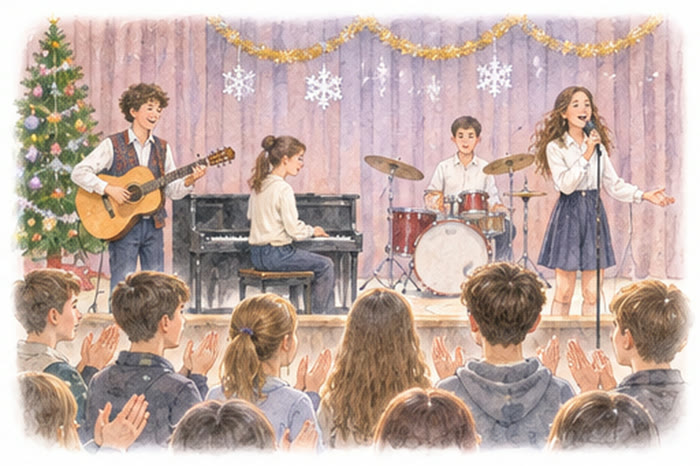

Listen to the text
Speed:

It started as a joke. At the New Year school party the real band couldn't come. Their van had broken down. The head teacher was in a panic. There were two hundred students in the hall and no music. "We can play," said my friend Ostap. I looked at him. We had never played together in our lives. But it was too late. Ostap is a guitarist. He has played since he was ten. Ivanna, who was standing next to us, is a pianist. Dmytro had drums at home, five minutes from the school. And they needed a lead singer. "You sing in the shower," said Ostap. "I have heard you through the wall." Twenty minutes later we were on the stage. My hands were shaking. I had never sung in front of an audience. We knew only three songs that all four of us could play: a folk song, a pop hit and "We Will Rock You". We started with the folk song. It was terrible. Dmytro was too fast, and I forgot the second line. Then somebody in the hall began to clap the rhythm. Then everybody did. The atmosphere changed. By the third song the whole hall was singing. It was so powerful that I stopped being afraid. We played our three songs four times, in different combinations. Nobody complained. After the party the head teacher shook our hands. "You saved the evening. What is the name of your band?" We looked at one another. "The Broken Van," said Ivanna. We have rehearsed every Friday since then. We know seven songs now.
Tap any sentence to hear it again.
Сподобалось? На сайті ще більше матеріалів для вчителів!
Reader, презентації, ігри, діагностичні та контрольні роботи до підручників 1-11 класів.
Перейти на сайт materials.allaenglish.com